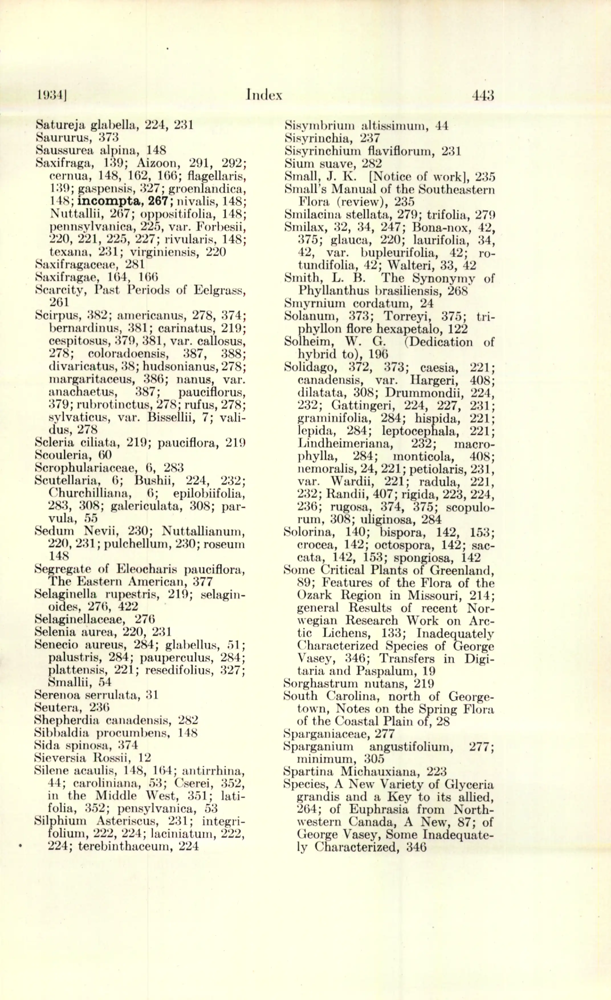
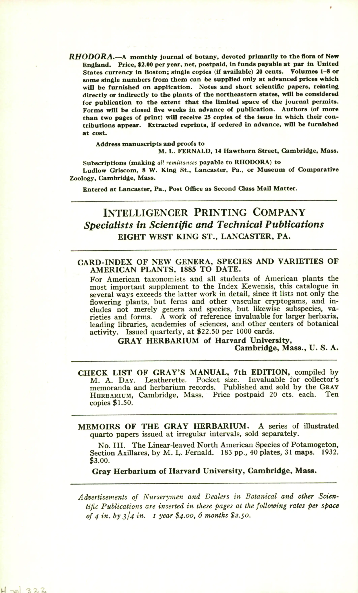
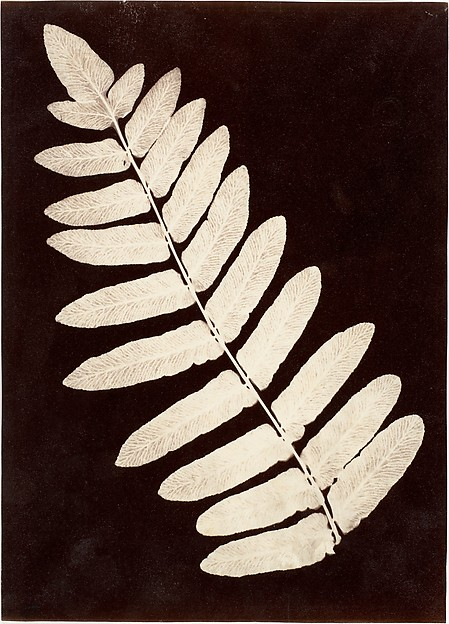
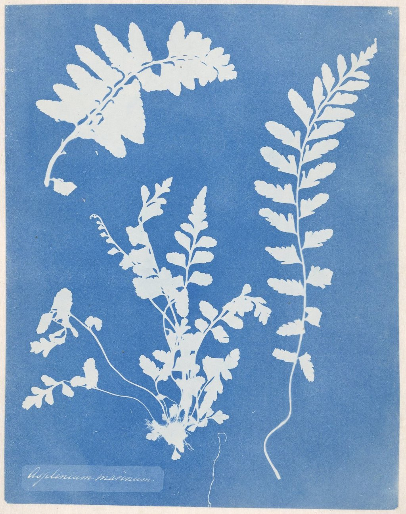
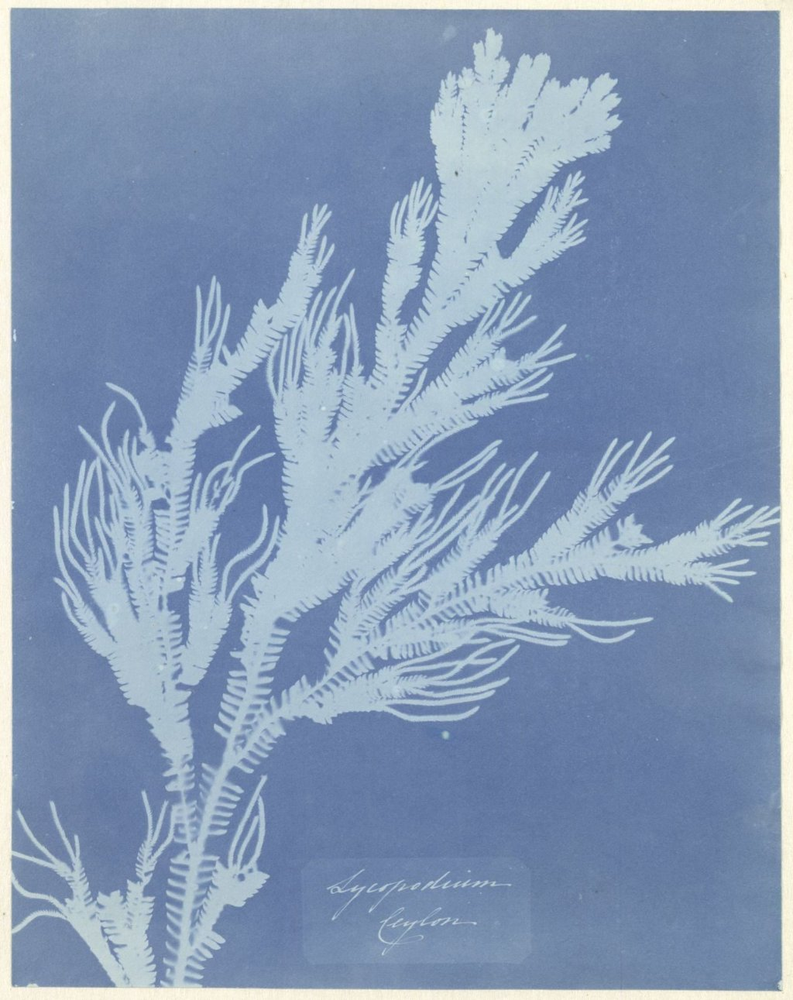

Source: https://www.biodiversitylibrary.org/page/603998
Album of watercolors of Asian fruits and flowers (page 603998) / Biodiversity Heritage Library / Public domain
图片以 WebP 形式从 BHL /pageimage/ 端点下载。可放大查看细节。
second-exhibition · v0.1 · repository-only
从自然史图像到知识秩序
repository-only-not-deployed
本页面是 v4.6 阶段产物，只用于 repository QA。本展览未部署到 GitHub Pages；6 件资产状态为 imported-not-deployed。
本展览由 4 节组成：观察、分类、复制、再组织。每节给出一段策展短文 + 一组 artifact cards。6 件 asset 全部来自 v4.5 asset import。
导览文本详见 second-exhibition/docs/VISITOR_GUIDE_ZH.md。
01 · 观察
观察是植物图谱的起点。当画家、博物学家或摄影师面对一株活体或一份标本，他们需要做出选择：哪些特征值得记录？哪些细节会因为印刷或数字化而丢失？本节以两份 BHL《Album of watercolors of Asian fruits and flowers》中的页面为引子，观察 18—19 世纪的水彩如何把花的轮廓、叶的脉络、果的质感固定为可被反复观看的图像。
Takeaway：观察不是被动地复制视觉，而是一连串关于保留什么、舍弃什么的判断。
Viewer action：把两张水彩图像并排放在一起，对比它们的取景方式与细节密度。
如果你只能保留图像中的一种视觉信息（颜色、轮廓、纹理、比例），你会留下哪一种？为什么？
02 · 分类
分类让图像有了位置。每一份植物标本背后都对应一个学名、一段采集信息和一份机构记录。本节以 Smithsonian NMNH Botany 馆藏的 Aconitum bulbilliferum 与大都会博物馆的 Botanical Specimen: Fern 为对照样本，观察图像如何从被观察的对象变成被命名的对象。NMNH 提供的低分辨率缩略图与 Met 提供的相对完整的 JPEG 也在提醒我们：不同机构对可发布图像的尺度不同。
Takeaway：分类学秩序依赖图像，图像的可获得性也受机构政策影响。
Viewer action：比较两件作品的 credit line 与 source note：谁提供了图像、以何种授权、在怎样的元数据层级？
把同一物种在不同机构、不同年份、不同授权下出现的版本放在一起，分类秩序如何因元数据不同而呈现差异？
03 · 复制
从手稿到印刷，从印刷到扫描，从扫描到 IIIF，复制技术决定了图像能否走出书房、走出博物馆、走出图书馆。本节以 Rijksmuseum Rijksprentenkabinet 收藏的 Anna Atkins 蓝晒 cyanotype 图像为引子，讨论 19 世纪的摄影/蓝晒印刷与今天的 IIIF Image API 在复制语义上的连续性与断裂。两件 Rijksmuseum 作品分别通过 Micrio IIIF 端点提供 JPG，本节同时记录了一条不能引用的 IIIF Presentation API manifest（404）作为研究路径中的边界。
Takeaway：复制技术决定图像的命运，也决定后人能否独立验证它。
Viewer action：尝试在浏览器中直接打开图像的 IIIF 端点，观察它在不同尺寸下的呈现。
如果你只能保留原图的某一种复制版本——扫描件、印刷件、IIIF 派生——你会保留哪一种？为什么？
04 · 再组织
再组织是本展览的尾声，也是数字馆藏时代最大的可能：当图像有了稳定的 identifier、可校验的元数据、可机器读取的 rights 字段，它们就不再是孤立的艺术品，而可以与其它图像重新连接。本节不展示新图像，而是把前 3 节出现的 6 件资产放回一张"使用图谱"，让观者看见：哪些字段是稳定的（identifier、source URL、rights URL），哪些字段是脆弱的（90×90 的缩略图、404 的 manifest、变动的版权字段）。
Takeaway：再组织的前提是诚实的元数据；脆弱的字段必须被标注，不能被静默使用。
Viewer action：打开 second-exhibition/docs/BUILD_ASSET_USAGE.md，列出哪些字段在你的下一轮研究中需要重新打开原页面核对。
如果你要为这 6 件资产写一个统一的元数据模板，哪些字段是必填、哪些是可选、哪些必须随每一次引用都重新验证？
6 件资产。每张卡片都包含 image、alt、caption、source note、credit line、viewing note。C-06 lightbox 已禁用。

Source: https://www.biodiversitylibrary.org/page/603998
Album of watercolors of Asian fruits and flowers (page 603998) / Biodiversity Heritage Library / Public domain
图片以 WebP 形式从 BHL /pageimage/ 端点下载。可放大查看细节。

Source: https://www.biodiversitylibrary.org/page/603962
Album of watercolors of Asian fruits and flowers (page 603962) / Biodiversity Heritage Library / Public domain (PD subset only)
PD subset caution：本页只属于 Public-domain 子集；BHL 同 item 的 CC BY-NC-SA 子集仍被排除。
Source: https://collections.nmnh.si.edu/search/botany/?ark=ark:/65665/31e002158-f911-411b-bbfb-63a2d207e920
Aconitum bulbilliferum Hand.-Mazz., Handel-Mazzetti 5202, 17 Sep 1914 / Smithsonian National Museum of Natural History, US Catalog 1529703 / Smithsonian Open Access (CC0 1.0, dataset-level)
Low-resolution caution：90×90 缩略图。页面不作为大幅展示；不启用 lightbox；image-rendering 使用浏览器默认值。

Source: https://www.metmuseum.org/art/collection/search/285149
[Botanical Specimen: Fern], 1855–60 / The Metropolitan Museum of Art, Gift of Russell C. Vail, 2003 (2003.562.3) / Public domain
Double-confirmation note：API `isPublicDomain=true` AND public-page Public Domain indicator。

Source: https://www.rijksmuseum.nl/en/collection/RP-F-F80152
Zeestreepvaren, Anna Atkins, c. 1854 / Rijksmuseum, object RP-F-F80152 / Public domain (CC0 1.0)
Per-item licence：Rijksmuseum 公开页面逐项标注版权为 Public domain（CC0 1.0）。对象类型为 photogram（cyanotype），不是传统版画。

/manifest.json 在本轮返回 404；manifest-based 证据未使用。Source: https://www.rijksmuseum.nl/en/collection/RP-F-F80313
Wolfsklauw, Anna Atkins, c. 1854 / Rijksmuseum, object RP-F-F80313 / Public domain (CC0 1.0)
Manifest 404 caveat：Rijksmuseum IIIF Presentation API manifest /manifest.json 在 v4.5 阶段返回 HTTP 404；本展览不基于 IIIF Presentation API manifest 撰写任何陈述。
12 个术语。术语与第二展览策展短文、deep research notes 配套使用。
深度阅读入口：
本块把页面层与文档层（4 个 markdown）连接起来。深度阅读不在线发生，它在文件树中。
6 件资产在元数据层（v4.5 import）的不变量：
脆弱变量：
观察阶段：把视觉信号分类成"轮廓 / 颜色 / 纹理 / 比例"四类。每一类的取舍都决定了图像能否被分类秩序接住。
复制阶段：把同样的取舍重复做一遍。IIIF Image API 的不同尺寸派生就是这种重复。
再组织阶段：把同一物种在不同机构、不同年份、不同授权下的版本放回一张图——分类秩序如何呈现差异？
本展览的研究模型基于以下命题：
本块不替代任何具体研究计划；详见 DEEP_RESEARCH_NOTES_ZH.md。
本展览的 6 件资产的来源与版权证据位于 second-exhibition/docs/SOURCE_AUDIT_MANIFEST.md 与 second-exhibition/docs/RIGHTS_AND_SOURCES.md。这两份文件不可修改，除非新一轮的源/版权核对产生了真实差异。
每张 artifact card 的 source note 与 credit line 与上述两份文件一一对应。